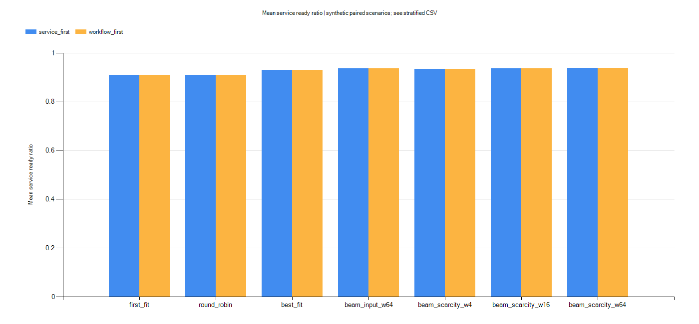
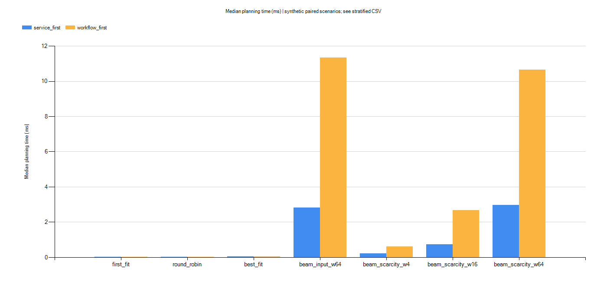

范围已确认为本机代码和仿真；真实Swarm与VxWorks部署未验收。
| item | status | evidence |
|---|---|---|
| 配置与精确检查 | PASS | D:\BaiduNetdiskDownload\考查\工业互联网安全\simulation\results\extended-study-20261020-191716-1004abb9\project\verification\results.json |
| 最终集成检查 | PASS | D:\BaiduNetdiskDownload\考查\工业互联网安全\simulation\results\extended-study-20261020-191716-1004abb9\project\verification\final-checks.json |
| 连续故障恢复 | PASS | D:\BaiduNetdiskDownload\考查\工业互联网安全\simulation\results\extended-study-20261020-191716-1004abb9\report\continuous-check-results.json |
| 前端与HTTP接口 | PASS | D:\BaiduNetdiskDownload\考查\工业互联网安全\simulation\results\extended-study-20261020-191716-1004abb9\report\ui-api-checks.json |
新增实验模式的完整业务链优先：完整业务数→服务数→部署时间→活跃节点数；服务数优先作为对照：服务数→部署时间→活跃节点数。演练台保留原有服务数优先默认模式。三个基础算法维持各自选择规则，以同一指标评价；接管固定健康部署，不能等同初始全局最优规划。
保留目标冲突反例：服务数优先3项服务/0条完整业务，完整链优先1项服务/1条完整业务。
| objective | paired_inputs | workflow_wins | workflow_ties | workflow_losses |
|---|---|---|---|---|
| service_first | 180 | 36 | 141 | 3 |
| workflow_first | 180 | 38 | 139 | 3 |
| service_scale | objective_cases | proven | not_proven | skipped |
|---|---|---|---|---|
| 4 | 120 | 120 | 0 | 0 |
| 8 | 120 | 50 | 70 | 0 |
| 12 | 120 | 0 | 0 | 120 |
{
"schema_version": 1,
"scenario_count": 180,
"measured_runs": 7560,
"measured_repetitions": 3,
"warmup_runs": 2520,
"seeds": [
11,
29,
47,
83,
101
],
"notice": "SYNTHETIC seeded scenarios. Same-input repeats measure JVM timing variability, not independent scenario samples. Exact gaps only when exhaustive and FIFO order identical. No universal optimality claim."
}相对First Fit，束搜索W64在74组配对输入/目标中完整业务链比例增加，6组减少。其余持平；不据此宣称普遍优势。
5个种子×4种拓扑（双链、分叉汇合、独立服务、随机DAG）×3种资源/能力配置×3种服务规模（4/8/12），共180组输入。每组两种目标、7种方法；同输入预热1次、测量3次。同输入重复只用于计时变化，不当作独立场景样本。结果为合成配置。
4服务精确求解最多50万状态/2秒；8服务最多10万状态/250毫秒；12服务不进行精确求解。只有完成穷举并且FIFO顺序一致时填写最优性主目标差距；其它留空。不同服务身份下不计算部署时间提升；所有原始方案和事件保留。


下方筛选不改变原始文件。
| profile | topology | service_scale | objective | method | seeds | ready_ratio_mean | workflow_ratio_mean | workflow_ratio_sd | deployment_seconds_mean | planning_median_ms |
|---|---|---|---|---|---|---|---|---|---|---|
| ample | chain | 4 | service_first | first_fit | 5 | 1 | 1 | 0 | 5.685 | 0.0029 |
| ample | chain | 4 | service_first | round_robin | 5 | 1 | 1 | 0 | 5.641 | 0.003199 |
| ample | chain | 4 | service_first | best_fit | 5 | 1 | 1 | 0 | 9.406 | 0.0192 |
| ample | chain | 4 | service_first | beam_input_w64 | 5 | 1 | 1 | 0 | 3.331 | 0.7965 |
| ample | chain | 4 | service_first | beam_scarcity_w4 | 5 | 1 | 1 | 0 | 3.591 | 0.0944 |
| ample | chain | 4 | service_first | beam_scarcity_w16 | 5 | 1 | 1 | 0 | 3.391 | 0.2771 |
| ample | chain | 4 | service_first | beam_scarcity_w64 | 5 | 1 | 1 | 0 | 3.331 | 0.8437 |
| ample | chain | 4 | workflow_first | first_fit | 5 | 1 | 1 | 0 | 5.685 | 0.0029 |
| ample | chain | 4 | workflow_first | round_robin | 5 | 1 | 1 | 0 | 5.641 | 0.003701 |
| ample | chain | 4 | workflow_first | best_fit | 5 | 1 | 1 | 0 | 9.406 | 0.021 |
| ample | chain | 4 | workflow_first | beam_input_w64 | 5 | 1 | 1 | 0 | 3.331 | 3.064 |
| ample | chain | 4 | workflow_first | beam_scarcity_w4 | 5 | 1 | 1 | 0 | 3.591 | 0.2402 |
| ample | chain | 4 | workflow_first | beam_scarcity_w16 | 5 | 1 | 1 | 0 | 3.391 | 0.994 |
| ample | chain | 4 | workflow_first | beam_scarcity_w64 | 5 | 1 | 1 | 0 | 3.331 | 3.04 |
| ample | chain | 8 | service_first | first_fit | 5 | 1 | 1 | 0 | 12.38 | 0.007399 |
| ample | chain | 8 | service_first | round_robin | 5 | 1 | 1 | 0 | 8.019 | 0.0073 |
| ample | chain | 8 | service_first | best_fit | 5 | 1 | 1 | 0 | 14.9 | 0.033 |
| ample | chain | 8 | service_first | beam_input_w64 | 5 | 1 | 1 | 0 | 4.661 | 3.146 |
| ample | chain | 8 | service_first | beam_scarcity_w4 | 5 | 1 | 1 | 0 | 4.665 | 0.215 |
| ample | chain | 8 | service_first | beam_scarcity_w16 | 5 | 1 | 1 | 0 | 4.714 | 0.745 |
| ample | chain | 8 | service_first | beam_scarcity_w64 | 5 | 1 | 1 | 0 | 4.661 | 3.331 |
| ample | chain | 8 | workflow_first | first_fit | 5 | 1 | 1 | 0 | 12.38 | 0.009799 |
| ample | chain | 8 | workflow_first | round_robin | 5 | 1 | 1 | 0 | 8.019 | 0.0079 |
| ample | chain | 8 | workflow_first | best_fit | 5 | 1 | 1 | 0 | 14.9 | 0.0392 |
| ample | chain | 8 | workflow_first | beam_input_w64 | 5 | 1 | 1 | 0 | 4.661 | 19.96 |
| ample | chain | 8 | workflow_first | beam_scarcity_w4 | 5 | 1 | 1 | 0 | 4.665 | 0.8795 |
| ample | chain | 8 | workflow_first | beam_scarcity_w16 | 5 | 1 | 1 | 0 | 4.714 | 4.635 |
| ample | chain | 8 | workflow_first | beam_scarcity_w64 | 5 | 1 | 1 | 0 | 4.661 | 19.77 |
| ample | chain | 12 | service_first | first_fit | 5 | 1 | 1 | 0 | 15.64 | 0.0105 |
| ample | chain | 12 | service_first | round_robin | 5 | 1 | 1 | 0 | 11.19 | 0.0119 |
| ample | chain | 12 | service_first | best_fit | 5 | 1 | 1 | 0 | 20.72 | 0.0569 |
| ample | chain | 12 | service_first | beam_input_w64 | 5 | 1 | 1 | 0 | 6.505 | 5.636 |
| ample | chain | 12 | service_first | beam_scarcity_w4 | 5 | 1 | 1 | 0 | 6.723 | 0.3529 |
| ample | chain | 12 | service_first | beam_scarcity_w16 | 5 | 1 | 1 | 0 | 6.566 | 1.271 |
| ample | chain | 12 | service_first | beam_scarcity_w64 | 5 | 1 | 1 | 0 | 6.505 | 5.678 |
| ample | chain | 12 | workflow_first | first_fit | 5 | 1 | 1 | 0 | 15.64 | 0.0095 |
| ample | chain | 12 | workflow_first | round_robin | 5 | 1 | 1 | 0 | 11.19 | 0.0159 |
| ample | chain | 12 | workflow_first | best_fit | 5 | 1 | 1 | 0 | 20.72 | 0.0517 |
| ample | chain | 12 | workflow_first | beam_input_w64 | 5 | 1 | 1 | 0 | 6.505 | 45.53 |
| ample | chain | 12 | workflow_first | beam_scarcity_w4 | 5 | 1 | 1 | 0 | 6.723 | 1.774 |
| ample | chain | 12 | workflow_first | beam_scarcity_w16 | 5 | 1 | 1 | 0 | 6.566 | 10.08 |
| ample | chain | 12 | workflow_first | beam_scarcity_w64 | 5 | 1 | 1 | 0 | 6.505 | 45.9 |
| pressure | chain | 4 | service_first | first_fit | 5 | 1 | 1 | 0 | 5.462 | 0.0097 |
| pressure | chain | 4 | service_first | round_robin | 5 | 1 | 1 | 0 | 3.852 | 0.0061 |
| pressure | chain | 4 | service_first | best_fit | 5 | 1 | 1 | 0 | 5.141 | 0.0221 |
| pressure | chain | 4 | service_first | beam_input_w64 | 5 | 1 | 1 | 0 | 3.34 | 0.5422 |
| pressure | chain | 4 | service_first | beam_scarcity_w4 | 5 | 1 | 1 | 0 | 3.601 | 0.09 |
| pressure | chain | 4 | service_first | beam_scarcity_w16 | 5 | 1 | 1 | 0 | 3.4 | 0.2631 |
| pressure | chain | 4 | service_first | beam_scarcity_w64 | 5 | 1 | 1 | 0 | 3.34 | 0.5636 |
| pressure | chain | 4 | workflow_first | first_fit | 5 | 1 | 1 | 0 | 5.462 | 0.0045 |
| pressure | chain | 4 | workflow_first | round_robin | 5 | 1 | 1 | 0 | 3.852 | 0.0062 |
| pressure | chain | 4 | workflow_first | best_fit | 5 | 1 | 1 | 0 | 5.141 | 0.0194 |
| pressure | chain | 4 | workflow_first | beam_input_w64 | 5 | 1 | 1 | 0 | 3.34 | 1.359 |
| pressure | chain | 4 | workflow_first | beam_scarcity_w4 | 5 | 1 | 1 | 0 | 3.601 | 0.1975 |
| pressure | chain | 4 | workflow_first | beam_scarcity_w16 | 5 | 1 | 1 | 0 | 3.4 | 0.7215 |
| pressure | chain | 4 | workflow_first | beam_scarcity_w64 | 5 | 1 | 1 | 0 | 3.34 | 1.394 |
| pressure | chain | 8 | service_first | first_fit | 5 | 0.75 | 0.5 | 0 | 5.462 | 0.0202 |
| pressure | chain | 8 | service_first | round_robin | 5 | 0.75 | 0.5 | 0 | 4.137 | 0.0183 |
| pressure | chain | 8 | service_first | best_fit | 5 | 0.75 | 0.5 | 0 | 5.672 | 0.0376 |
| pressure | chain | 8 | service_first | beam_input_w64 | 5 | 0.75 | 0.5 | 0 | 3.34 | 2.661 |
| pressure | chain | 8 | service_first | beam_scarcity_w4 | 5 | 0.75 | 0.5 | 0 | 3.601 | 0.2099 |
| pressure | chain | 8 | service_first | beam_scarcity_w16 | 5 | 0.75 | 0.5 | 0 | 3.4 | 0.6893 |
| pressure | chain | 8 | service_first | beam_scarcity_w64 | 5 | 0.75 | 0.5 | 0 | 3.34 | 2.557 |
| pressure | chain | 8 | workflow_first | first_fit | 5 | 0.75 | 0.5 | 0 | 5.462 | 0.0319 |
| pressure | chain | 8 | workflow_first | round_robin | 5 | 0.75 | 0.5 | 0 | 4.137 | 0.0193 |
| pressure | chain | 8 | workflow_first | best_fit | 5 | 0.75 | 0.5 | 0 | 5.672 | 0.0401 |
| pressure | chain | 8 | workflow_first | beam_input_w64 | 5 | 0.75 | 0.5 | 0 | 3.34 | 9.325 |
| pressure | chain | 8 | workflow_first | beam_scarcity_w4 | 5 | 0.75 | 0.5 | 0 | 3.601 | 0.6714 |
| pressure | chain | 8 | workflow_first | beam_scarcity_w16 | 5 | 0.75 | 0.5 | 0 | 3.4 | 2.695 |
| pressure | chain | 8 | workflow_first | beam_scarcity_w64 | 5 | 0.75 | 0.5 | 0 | 3.34 | 9.558 |
| pressure | chain | 12 | service_first | first_fit | 5 | 0.6667 | 0.3333 | 0 | 5.791 | 0.0396 |
| pressure | chain | 12 | service_first | round_robin | 5 | 0.6667 | 0.3333 | 0 | 4.137 | 0.0296 |
| pressure | chain | 12 | service_first | best_fit | 5 | 0.6667 | 0.3333 | 0 | 5.762 | 0.0603 |
| pressure | chain | 12 | service_first | beam_input_w64 | 5 | 0.6667 | 0.3333 | 0 | 3.34 | 4.836 |
| pressure | chain | 12 | service_first | beam_scarcity_w4 | 5 | 0.6667 | 0.3333 | 0 | 3.601 | 0.3414 |
| pressure | chain | 12 | service_first | beam_scarcity_w16 | 5 | 0.6667 | 0.3333 | 0 | 3.4 | 1.222 |
| pressure | chain | 12 | service_first | beam_scarcity_w64 | 5 | 0.6667 | 0.3333 | 0 | 3.34 | 4.73 |
| pressure | chain | 12 | workflow_first | first_fit | 5 | 0.6667 | 0.3333 | 0 | 5.791 | 0.0355 |
| pressure | chain | 12 | workflow_first | round_robin | 5 | 0.6667 | 0.3333 | 0 | 4.137 | 0.0292 |
| pressure | chain | 12 | workflow_first | best_fit | 5 | 0.6667 | 0.3333 | 0 | 5.762 | 0.0599 |
| pressure | chain | 12 | workflow_first | beam_input_w64 | 5 | 0.6667 | 0.3333 | 0 | 3.34 | 21.92 |
| pressure | chain | 12 | workflow_first | beam_scarcity_w4 | 5 | 0.6667 | 0.3333 | 0 | 3.601 | 1.18 |
| pressure | chain | 12 | workflow_first | beam_scarcity_w16 | 5 | 0.6667 | 0.3333 | 0 | 3.4 | 5.714 |
| pressure | chain | 12 | workflow_first | beam_scarcity_w64 | 5 | 0.6667 | 0.3333 | 0 | 3.34 | 21.85 |
| gap | chain | 4 | service_first | first_fit | 5 | 0.95 | 0.9 | 0.2236 | 5.304 | 0.009301 |
| gap | chain | 4 | service_first | round_robin | 5 | 1 | 1 | 0 | 3.822 | 0.0067 |
| gap | chain | 4 | service_first | best_fit | 5 | 0.9 | 0.8 | 0.2739 | 4.737 | 0.0209 |
| gap | chain | 4 | service_first | beam_input_w64 | 5 | 1 | 1 | 0 | 3.34 | 0.2514 |
| gap | chain | 4 | service_first | beam_scarcity_w4 | 5 | 1 | 1 | 0 | 3.428 | 0.0859 |
| gap | chain | 4 | service_first | beam_scarcity_w16 | 5 | 1 | 1 | 0 | 3.34 | 0.2023 |
| gap | chain | 4 | service_first | beam_scarcity_w64 | 5 | 1 | 1 | 0 | 3.34 | 0.2806 |
| gap | chain | 4 | workflow_first | first_fit | 5 | 0.95 | 0.9 | 0.2236 | 5.304 | 0.005101 |
| gap | chain | 4 | workflow_first | round_robin | 5 | 1 | 1 | 0 | 3.822 | 0.0066 |
| gap | chain | 4 | workflow_first | best_fit | 5 | 0.9 | 0.8 | 0.2739 | 4.737 | 0.0217 |
| gap | chain | 4 | workflow_first | beam_input_w64 | 5 | 1 | 1 | 0 | 3.34 | 0.5943 |
| gap | chain | 4 | workflow_first | beam_scarcity_w4 | 5 | 1 | 1 | 0 | 3.428 | 0.137 |
| gap | chain | 4 | workflow_first | beam_scarcity_w16 | 5 | 1 | 1 | 0 | 3.34 | 0.3646 |
| gap | chain | 4 | workflow_first | beam_scarcity_w64 | 5 | 1 | 1 | 0 | 3.34 | 0.6249 |
| gap | chain | 8 | service_first | first_fit | 5 | 0.725 | 0.45 | 0.1118 | 5.584 | 0.0293 |
| gap | chain | 8 | service_first | round_robin | 5 | 0.75 | 0.5 | 0 | 4.102 | 0.0225 |
| gap | chain | 8 | service_first | best_fit | 5 | 0.7 | 0.4 | 0.1369 | 5.242 | 0.0492 |
| gap | chain | 8 | service_first | beam_input_w64 | 5 | 0.75 | 0.5 | 0 | 3.221 | 1.964 |
| gap | chain | 8 | service_first | beam_scarcity_w4 | 5 | 0.75 | 0.5 | 0 | 3.428 | 0.1928 |
| gap | chain | 8 | service_first | beam_scarcity_w16 | 5 | 0.75 | 0.5 | 0 | 3.286 | 0.5917 |
| gap | chain | 8 | service_first | beam_scarcity_w64 | 5 | 0.75 | 0.5 | 0 | 3.221 | 1.975 |
| gap | chain | 8 | workflow_first | first_fit | 5 | 0.725 | 0.45 | 0.1118 | 5.584 | 0.0259 |
| gap | chain | 8 | workflow_first | round_robin | 5 | 0.75 | 0.5 | 0 | 4.102 | 0.022 |
| gap | chain | 8 | workflow_first | best_fit | 5 | 0.7 | 0.4 | 0.1369 | 5.242 | 0.0405 |
| gap | chain | 8 | workflow_first | beam_input_w64 | 5 | 0.75 | 0.5 | 0 | 3.221 | 5.645 |
| gap | chain | 8 | workflow_first | beam_scarcity_w4 | 5 | 0.75 | 0.5 | 0 | 3.428 | 0.4238 |
| gap | chain | 8 | workflow_first | beam_scarcity_w16 | 5 | 0.75 | 0.5 | 0 | 3.34 | 1.315 |
| gap | chain | 8 | workflow_first | beam_scarcity_w64 | 5 | 0.75 | 0.5 | 0 | 3.221 | 5.612 |
| gap | chain | 12 | service_first | first_fit | 5 | 0.65 | 0.3 | 0.07454 | 5.798 | 0.0479 |
| gap | chain | 12 | service_first | round_robin | 5 | 0.6667 | 0.3333 | 0 | 4.102 | 0.0422 |
| gap | chain | 12 | service_first | best_fit | 5 | 0.6333 | 0.2667 | 0.09129 | 5.332 | 0.0592 |
| gap | chain | 12 | service_first | beam_input_w64 | 5 | 0.6667 | 0.3333 | 0 | 3.221 | 3.889 |
| gap | chain | 12 | service_first | beam_scarcity_w4 | 5 | 0.6667 | 0.3333 | 0 | 3.428 | 0.3256 |
| gap | chain | 12 | service_first | beam_scarcity_w16 | 5 | 0.6667 | 0.3333 | 0 | 3.302 | 1.025 |
| gap | chain | 12 | service_first | beam_scarcity_w64 | 5 | 0.6667 | 0.3333 | 0 | 3.221 | 3.906 |
| gap | chain | 12 | workflow_first | first_fit | 5 | 0.65 | 0.3 | 0.07454 | 5.798 | 0.0465 |
| gap | chain | 12 | workflow_first | round_robin | 5 | 0.6667 | 0.3333 | 0 | 4.102 | 0.0426 |
| gap | chain | 12 | workflow_first | best_fit | 5 | 0.6333 | 0.2667 | 0.09129 | 5.332 | 0.0608 |
| gap | chain | 12 | workflow_first | beam_input_w64 | 5 | 0.6667 | 0.3333 | 0 | 3.221 | 13.25 |
| gap | chain | 12 | workflow_first | beam_scarcity_w4 | 5 | 0.6667 | 0.3333 | 0 | 3.428 | 0.6458 |
| gap | chain | 12 | workflow_first | beam_scarcity_w16 | 5 | 0.6667 | 0.3333 | 0 | 3.356 | 2.831 |
| gap | chain | 12 | workflow_first | beam_scarcity_w64 | 5 | 0.6667 | 0.3333 | 0 | 3.221 | 12.85 |
| ample | fork_join | 4 | service_first | first_fit | 5 | 1 | 1 | 0 | 4.371 | 0.0028 |
| ample | fork_join | 4 | service_first | round_robin | 5 | 1 | 1 | 0 | 6.941 | 0.003401 |
| ample | fork_join | 4 | service_first | best_fit | 5 | 1 | 1 | 0 | 6.708 | 0.0177 |
| ample | fork_join | 4 | service_first | beam_input_w64 | 5 | 1 | 1 | 0 | 2.901 | 0.9371 |
| ample | fork_join | 4 | service_first | beam_scarcity_w4 | 5 | 1 | 1 | 0 | 2.901 | 0.097 |
| ample | fork_join | 4 | service_first | beam_scarcity_w16 | 5 | 1 | 1 | 0 | 2.901 | 0.2926 |
| ample | fork_join | 4 | service_first | beam_scarcity_w64 | 5 | 1 | 1 | 0 | 2.901 | 0.937 |
| ample | fork_join | 4 | workflow_first | first_fit | 5 | 1 | 1 | 0 | 4.371 | 0.002601 |
| ample | fork_join | 4 | workflow_first | round_robin | 5 | 1 | 1 | 0 | 6.941 | 0.0035 |
| ample | fork_join | 4 | workflow_first | best_fit | 5 | 1 | 1 | 0 | 6.708 | 0.0194 |
| ample | fork_join | 4 | workflow_first | beam_input_w64 | 5 | 1 | 1 | 0 | 2.901 | 3.903 |
| ample | fork_join | 4 | workflow_first | beam_scarcity_w4 | 5 | 1 | 1 | 0 | 2.901 | 0.3191 |
| ample | fork_join | 4 | workflow_first | beam_scarcity_w16 | 5 | 1 | 1 | 0 | 2.901 | 1.212 |
| ample | fork_join | 4 | workflow_first | beam_scarcity_w64 | 5 | 1 | 1 | 0 | 2.901 | 3.971 |
| ample | fork_join | 8 | service_first | first_fit | 5 | 1 | 1 | 0 | 8.611 | 0.0054 |
| ample | fork_join | 8 | service_first | round_robin | 5 | 1 | 1 | 0 | 6.941 | 0.0075 |
| ample | fork_join | 8 | service_first | best_fit | 5 | 1 | 1 | 0 | 12.08 | 0.0354 |
| ample | fork_join | 8 | service_first | beam_input_w64 | 5 | 1 | 1 | 0 | 4.123 | 3.417 |
| ample | fork_join | 8 | service_first | beam_scarcity_w4 | 5 | 1 | 1 | 0 | 4.357 | 0.2381 |
| ample | fork_join | 8 | service_first | beam_scarcity_w16 | 5 | 1 | 1 | 0 | 4.252 | 0.8704 |
| ample | fork_join | 8 | service_first | beam_scarcity_w64 | 5 | 1 | 1 | 0 | 4.123 | 3.489 |
| ample | fork_join | 8 | workflow_first | first_fit | 5 | 1 | 1 | 0 | 8.611 | 0.004999 |
| ample | fork_join | 8 | workflow_first | round_robin | 5 | 1 | 1 | 0 | 6.941 | 0.0069 |
| ample | fork_join | 8 | workflow_first | best_fit | 5 | 1 | 1 | 0 | 12.08 | 0.0366 |
| ample | fork_join | 8 | workflow_first | beam_input_w64 | 5 | 1 | 1 | 0 | 4.123 | 25.34 |
| ample | fork_join | 8 | workflow_first | beam_scarcity_w4 | 5 | 1 | 1 | 0 | 4.357 | 1.265 |
| ample | fork_join | 8 | workflow_first | beam_scarcity_w16 | 5 | 1 | 1 | 0 | 4.252 | 6.041 |
| ample | fork_join | 8 | workflow_first | beam_scarcity_w64 | 5 | 1 | 1 | 0 | 4.123 | 25.55 |
| ample | fork_join | 12 | service_first | first_fit | 5 | 1 | 1 | 0 | 14.24 | 0.0071 |
| ample | fork_join | 12 | service_first | round_robin | 5 | 1 | 1 | 0 | 9.168 | 0.011 |
| ample | fork_join | 12 | service_first | best_fit | 5 | 1 | 1 | 0 | 16.03 | 0.0506 |
| ample | fork_join | 12 | service_first | beam_input_w64 | 5 | 1 | 1 | 0 | 4.802 | 6.087 |
| ample | fork_join | 12 | service_first | beam_scarcity_w4 | 5 | 1 | 1 | 0 | 5.965 | 0.3604 |
| ample | fork_join | 12 | service_first | beam_scarcity_w16 | 5 | 1 | 1 | 0 | 5.019 | 1.427 |
| ample | fork_join | 12 | service_first | beam_scarcity_w64 | 5 | 1 | 1 | 0 | 4.802 | 6.015 |
| ample | fork_join | 12 | workflow_first | first_fit | 5 | 1 | 1 | 0 | 14.24 | 0.007 |
| ample | fork_join | 12 | workflow_first | round_robin | 5 | 1 | 1 | 0 | 9.168 | 0.0103 |
| ample | fork_join | 12 | workflow_first | best_fit | 5 | 1 | 1 | 0 | 16.03 | 0.054 |
| ample | fork_join | 12 | workflow_first | beam_input_w64 | 5 | 1 | 1 | 0 | 4.802 | 64.27 |
| ample | fork_join | 12 | workflow_first | beam_scarcity_w4 | 5 | 1 | 1 | 0 | 5.965 | 2.742 |
| ample | fork_join | 12 | workflow_first | beam_scarcity_w16 | 5 | 1 | 1 | 0 | 5.019 | 14.71 |
| ample | fork_join | 12 | workflow_first | beam_scarcity_w64 | 5 | 1 | 1 | 0 | 4.802 | 65.66 |
| pressure | fork_join | 4 | service_first | first_fit | 5 | 1 | 1 | 0 | 5.3 | 0.0095 |
| pressure | fork_join | 4 | service_first | round_robin | 5 | 1 | 1 | 0 | 4.42 | 0.0063 |
| pressure | fork_join | 4 | service_first | best_fit | 5 | 1 | 1 | 0 | 5.139 | 0.0304 |
| pressure | fork_join | 4 | service_first | beam_input_w64 | 5 | 1 | 1 | 0 | 2.901 | 0.7078 |
| pressure | fork_join | 4 | service_first | beam_scarcity_w4 | 5 | 1 | 1 | 0 | 2.901 | 0.1015 |
| pressure | fork_join | 4 | service_first | beam_scarcity_w16 | 5 | 1 | 1 | 0 | 2.901 | 0.2758 |
| pressure | fork_join | 4 | service_first | beam_scarcity_w64 | 5 | 1 | 1 | 0 | 2.901 | 0.7518 |
| pressure | fork_join | 4 | workflow_first | first_fit | 5 | 1 | 1 | 0 | 5.3 | 0.0048 |
| pressure | fork_join | 4 | workflow_first | round_robin | 5 | 1 | 1 | 0 | 4.42 | 0.006199 |
| pressure | fork_join | 4 | workflow_first | best_fit | 5 | 1 | 1 | 0 | 5.139 | 0.0211 |
| pressure | fork_join | 4 | workflow_first | beam_input_w64 | 5 | 1 | 1 | 0 | 2.901 | 2.296 |
| pressure | fork_join | 4 | workflow_first | beam_scarcity_w4 | 5 | 1 | 1 | 0 | 2.901 | 0.2681 |
| pressure | fork_join | 4 | workflow_first | beam_scarcity_w16 | 5 | 1 | 1 | 0 | 2.901 | 0.964 |
| pressure | fork_join | 4 | workflow_first | beam_scarcity_w64 | 5 | 1 | 1 | 0 | 2.901 | 2.331 |
| pressure | fork_join | 8 | service_first | first_fit | 5 | 0.875 | 0.5 | 0 | 5.3 | 0.0143 |
| pressure | fork_join | 8 | service_first | round_robin | 5 | 0.875 | 0.5 | 0 | 4.42 | 0.0144 |
| pressure | fork_join | 8 | service_first | best_fit | 5 | 1 | 1 | 0 | 8.109 | 0.0468 |
| pressure | fork_join | 8 | service_first | beam_input_w64 | 5 | 1 | 1 | 0 | 4.856 | 2.844 |
| pressure | fork_join | 8 | service_first | beam_scarcity_w4 | 5 | 1 | 1 | 0 | 5.215 | 0.2244 |
| pressure | fork_join | 8 | service_first | beam_scarcity_w16 | 5 | 1 | 1 | 0 | 5.207 | 0.758 |
| pressure | fork_join | 8 | service_first | beam_scarcity_w64 | 5 | 1 | 1 | 0 | 4.856 | 3.03 |
| pressure | fork_join | 8 | workflow_first | first_fit | 5 | 0.875 | 0.5 | 0 | 5.3 | 0.0162 |
| pressure | fork_join | 8 | workflow_first | round_robin | 5 | 0.875 | 0.5 | 0 | 4.42 | 0.0131 |
| pressure | fork_join | 8 | workflow_first | best_fit | 5 | 1 | 1 | 0 | 8.109 | 0.0388 |
| pressure | fork_join | 8 | workflow_first | beam_input_w64 | 5 | 1 | 1 | 0 | 4.856 | 16.39 |
| pressure | fork_join | 8 | workflow_first | beam_scarcity_w4 | 5 | 1 | 1 | 0 | 5.215 | 0.8892 |
| pressure | fork_join | 8 | workflow_first | beam_scarcity_w16 | 5 | 1 | 1 | 0 | 5.207 | 4.153 |
| pressure | fork_join | 8 | workflow_first | beam_scarcity_w64 | 5 | 1 | 1 | 0 | 4.856 | 16.67 |
| pressure | fork_join | 12 | service_first | first_fit | 5 | 0.8333 | 0.3333 | 0 | 5.3 | 0.0242 |
| pressure | fork_join | 12 | service_first | round_robin | 5 | 0.8333 | 0.3333 | 0 | 4.579 | 0.0248 |
| pressure | fork_join | 12 | service_first | best_fit | 5 | 0.9 | 0.6667 | 0 | 8.7 | 0.0552 |
| pressure | fork_join | 12 | service_first | beam_input_w64 | 5 | 0.9167 | 0.6667 | 0 | 4.902 | 4.674 |
| pressure | fork_join | 12 | service_first | beam_scarcity_w4 | 5 | 0.9 | 0.6667 | 0 | 5.215 | 0.3265 |
| pressure | fork_join | 12 | service_first | beam_scarcity_w16 | 5 | 0.9167 | 0.6667 | 0 | 5.253 | 1.197 |
| pressure | fork_join | 12 | service_first | beam_scarcity_w64 | 5 | 0.9167 | 0.6667 | 0 | 4.902 | 4.828 |
| pressure | fork_join | 12 | workflow_first | first_fit | 5 | 0.8333 | 0.3333 | 0 | 5.3 | 0.0223 |
| pressure | fork_join | 12 | workflow_first | round_robin | 5 | 0.8333 | 0.3333 | 0 | 4.579 | 0.0233 |
| pressure | fork_join | 12 | workflow_first | best_fit | 5 | 0.9 | 0.6667 | 0 | 8.7 | 0.0608 |
| pressure | fork_join | 12 | workflow_first | beam_input_w64 | 5 | 0.9167 | 0.6667 | 0 | 4.902 | 36.19 |
| pressure | fork_join | 12 | workflow_first | beam_scarcity_w4 | 5 | 0.9 | 0.6667 | 0 | 5.215 | 1.704 |
| pressure | fork_join | 12 | workflow_first | beam_scarcity_w16 | 5 | 0.9167 | 0.6667 | 0 | 5.253 | 8.44 |
| pressure | fork_join | 12 | workflow_first | beam_scarcity_w64 | 5 | 0.9167 | 0.6667 | 0 | 4.902 | 34.7 |
| gap | fork_join | 4 | service_first | first_fit | 5 | 1 | 1 | 0 | 5.3 | 0.0049 |
| gap | fork_join | 4 | service_first | round_robin | 5 | 1 | 1 | 0 | 4.395 | 0.0067 |
| gap | fork_join | 4 | service_first | best_fit | 5 | 1 | 1 | 0 | 3.742 | 0.0205 |
| gap | fork_join | 4 | service_first | beam_input_w64 | 5 | 1 | 1 | 0 | 2.926 | 0.2611 |
| gap | fork_join | 4 | service_first | beam_scarcity_w4 | 5 | 1 | 1 | 0 | 2.926 | 0.0883 |
| gap | fork_join | 4 | service_first | beam_scarcity_w16 | 5 | 1 | 1 | 0 | 2.926 | 0.2029 |
| gap | fork_join | 4 | service_first | beam_scarcity_w64 | 5 | 1 | 1 | 0 | 2.926 | 0.2859 |
| gap | fork_join | 4 | workflow_first | first_fit | 5 | 1 | 1 | 0 | 5.3 | 0.0044 |
| gap | fork_join | 4 | workflow_first | round_robin | 5 | 1 | 1 | 0 | 4.395 | 0.0064 |
| gap | fork_join | 4 | workflow_first | best_fit | 5 | 1 | 1 | 0 | 3.742 | 0.0212 |
| gap | fork_join | 4 | workflow_first | beam_input_w64 | 5 | 1 | 1 | 0 | 2.926 | 0.6587 |
| gap | fork_join | 4 | workflow_first | beam_scarcity_w4 | 5 | 1 | 1 | 0 | 2.926 | 0.1709 |
| gap | fork_join | 4 | workflow_first | beam_scarcity_w16 | 5 | 1 | 1 | 0 | 2.926 | 0.5604 |
| gap | fork_join | 4 | workflow_first | beam_scarcity_w64 | 5 | 1 | 1 | 0 | 2.926 | 0.7173 |
| gap | fork_join | 8 | service_first | first_fit | 5 | 0.875 | 0.5 | 0 | 5.3 | 0.0129 |
| gap | fork_join | 8 | service_first | round_robin | 5 | 0.875 | 0.5 | 0 | 4.675 | 0.0179 |
| gap | fork_join | 8 | service_first | best_fit | 5 | 0.9 | 0.6 | 0.2236 | 5.483 | 0.0422 |
| gap | fork_join | 8 | service_first | beam_input_w64 | 5 | 0.9 | 0.6 | 0.2236 | 3.189 | 2.146 |
| gap | fork_join | 8 | service_first | beam_scarcity_w4 | 5 | 0.875 | 0.5 | 0 | 2.926 | 0.2107 |
| gap | fork_join | 8 | service_first | beam_scarcity_w16 | 5 | 0.9 | 0.6 | 0.2236 | 3.253 | 0.6141 |
| gap | fork_join | 8 | service_first | beam_scarcity_w64 | 5 | 0.9 | 0.6 | 0.2236 | 3.189 | 2.078 |
| gap | fork_join | 8 | workflow_first | first_fit | 5 | 0.875 | 0.5 | 0 | 5.3 | 0.0165 |
| gap | fork_join | 8 | workflow_first | round_robin | 5 | 0.875 | 0.5 | 0 | 4.675 | 0.0181 |
| gap | fork_join | 8 | workflow_first | best_fit | 5 | 0.9 | 0.6 | 0.2236 | 5.483 | 0.0405 |
| gap | fork_join | 8 | workflow_first | beam_input_w64 | 5 | 0.9 | 0.6 | 0.2236 | 3.189 | 8.264 |
| gap | fork_join | 8 | workflow_first | beam_scarcity_w4 | 5 | 0.875 | 0.5 | 0 | 2.926 | 0.5433 |
| gap | fork_join | 8 | workflow_first | beam_scarcity_w16 | 5 | 0.9 | 0.6 | 0.2236 | 3.253 | 2.266 |
| gap | fork_join | 8 | workflow_first | beam_scarcity_w64 | 5 | 0.9 | 0.6 | 0.2236 | 3.189 | 8.315 |
| gap | fork_join | 12 | service_first | first_fit | 5 | 0.8333 | 0.3333 | 0 | 5.905 | 0.0313 |
| gap | fork_join | 12 | service_first | round_robin | 5 | 0.8167 | 0.3333 | 0 | 4.87 | 0.0292 |
| gap | fork_join | 12 | service_first | best_fit | 5 | 0.8333 | 0.4 | 0.1491 | 6.807 | 0.0582 |
| gap | fork_join | 12 | service_first | beam_input_w64 | 5 | 0.8333 | 0.3333 | 0 | 3.715 | 4.11 |
| gap | fork_join | 12 | service_first | beam_scarcity_w4 | 5 | 0.8333 | 0.3333 | 0 | 3.853 | 0.3302 |
| gap | fork_join | 12 | service_first | beam_scarcity_w16 | 5 | 0.8333 | 0.3333 | 0 | 3.815 | 1.058 |
| gap | fork_join | 12 | service_first | beam_scarcity_w64 | 5 | 0.8333 | 0.3333 | 0 | 3.715 | 3.963 |
| gap | fork_join | 12 | workflow_first | first_fit | 5 | 0.8333 | 0.3333 | 0 | 5.905 | 0.0274 |
| gap | fork_join | 12 | workflow_first | round_robin | 5 | 0.8167 | 0.3333 | 0 | 4.87 | 0.0294 |
| gap | fork_join | 12 | workflow_first | best_fit | 5 | 0.8333 | 0.4 | 0.1491 | 6.807 | 0.0621 |
| gap | fork_join | 12 | workflow_first | beam_input_w64 | 5 | 0.8333 | 0.4 | 0.1491 | 3.868 | 21.73 |
| gap | fork_join | 12 | workflow_first | beam_scarcity_w4 | 5 | 0.8333 | 0.3333 | 0 | 3.853 | 1.101 |
| gap | fork_join | 12 | workflow_first | beam_scarcity_w16 | 5 | 0.8167 | 0.4 | 0.1491 | 3.961 | 4.818 |
| gap | fork_join | 12 | workflow_first | beam_scarcity_w64 | 5 | 0.8333 | 0.4 | 0.1491 | 3.868 | 20.95 |
| ample | independent | 4 | service_first | first_fit | 5 | 1 | 1 | 0 | 4.371 | 0.0032 |
| ample | independent | 4 | service_first | round_robin | 5 | 1 | 1 | 0 | 4.872 | 0.003201 |
| ample | independent | 4 | service_first | best_fit | 5 | 1 | 1 | 0 | 4.695 | 0.0173 |
| ample | independent | 4 | service_first | beam_input_w64 | 5 | 1 | 1 | 0 | 2.326 | 1.033 |
| ample | independent | 4 | service_first | beam_scarcity_w4 | 5 | 1 | 1 | 0 | 2.326 | 0.1144 |
| ample | independent | 4 | service_first | beam_scarcity_w16 | 5 | 1 | 1 | 0 | 2.326 | 0.3723 |
| ample | independent | 4 | service_first | beam_scarcity_w64 | 5 | 1 | 1 | 0 | 2.326 | 0.9842 |
| ample | independent | 4 | workflow_first | first_fit | 5 | 1 | 1 | 0 | 4.371 | 0.0026 |
| ample | independent | 4 | workflow_first | round_robin | 5 | 1 | 1 | 0 | 4.872 | 0.003399 |
| ample | independent | 4 | workflow_first | best_fit | 5 | 1 | 1 | 0 | 4.695 | 0.0185 |
| ample | independent | 4 | workflow_first | beam_input_w64 | 5 | 1 | 1 | 0 | 2.326 | 3.007 |
| ample | independent | 4 | workflow_first | beam_scarcity_w4 | 5 | 1 | 1 | 0 | 2.326 | 0.2303 |
| ample | independent | 4 | workflow_first | beam_scarcity_w16 | 5 | 1 | 1 | 0 | 2.326 | 0.8548 |
| ample | independent | 4 | workflow_first | beam_scarcity_w64 | 5 | 1 | 1 | 0 | 2.326 | 2.657 |
| ample | independent | 8 | service_first | first_fit | 5 | 1 | 1 | 0 | 8.611 | 0.0048 |
| ample | independent | 8 | service_first | round_robin | 5 | 1 | 1 | 0 | 4.997 | 0.0064 |
| ample | independent | 8 | service_first | best_fit | 5 | 1 | 1 | 0 | 6.06 | 0.0346 |
| ample | independent | 8 | service_first | beam_input_w64 | 5 | 1 | 1 | 0 | 3.175 | 3.509 |
| ample | independent | 8 | service_first | beam_scarcity_w4 | 5 | 1 | 1 | 0 | 3.111 | 0.2361 |
| ample | independent | 8 | service_first | beam_scarcity_w16 | 5 | 1 | 1 | 0 | 3.111 | 0.8734 |
| ample | independent | 8 | service_first | beam_scarcity_w64 | 5 | 1 | 1 | 0 | 3.111 | 3.832 |
| ample | independent | 8 | workflow_first | first_fit | 5 | 1 | 1 | 0 | 8.611 | 0.0057 |
| ample | independent | 8 | workflow_first | round_robin | 5 | 1 | 1 | 0 | 4.997 | 0.0085 |
| ample | independent | 8 | workflow_first | best_fit | 5 | 1 | 1 | 0 | 6.06 | 0.0354 |
| ample | independent | 8 | workflow_first | beam_input_w64 | 5 | 1 | 1 | 0 | 3.175 | 14.62 |
| ample | independent | 8 | workflow_first | beam_scarcity_w4 | 5 | 1 | 1 | 0 | 3.111 | 0.7255 |
| ample | independent | 8 | workflow_first | beam_scarcity_w16 | 5 | 1 | 1 | 0 | 3.111 | 3.534 |
| ample | independent | 8 | workflow_first | beam_scarcity_w64 | 5 | 1 | 1 | 0 | 3.111 | 14.8 |
| ample | independent | 12 | service_first | first_fit | 5 | 1 | 1 | 0 | 10.69 | 0.006099 |
| ample | independent | 12 | service_first | round_robin | 5 | 1 | 1 | 0 | 5.528 | 0.009799 |
| ample | independent | 12 | service_first | best_fit | 5 | 1 | 1 | 0 | 7.059 | 0.0504 |
| ample | independent | 12 | service_first | beam_input_w64 | 5 | 1 | 1 | 0 | 3.566 | 6.047 |
| ample | independent | 12 | service_first | beam_scarcity_w4 | 5 | 1 | 1 | 0 | 3.449 | 0.3731 |
| ample | independent | 12 | service_first | beam_scarcity_w16 | 5 | 1 | 1 | 0 | 3.449 | 1.416 |
| ample | independent | 12 | service_first | beam_scarcity_w64 | 5 | 1 | 1 | 0 | 3.449 | 6.256 |
| ample | independent | 12 | workflow_first | first_fit | 5 | 1 | 1 | 0 | 10.69 | 0.0057 |
| ample | independent | 12 | workflow_first | round_robin | 5 | 1 | 1 | 0 | 5.528 | 0.009199 |
| ample | independent | 12 | workflow_first | best_fit | 5 | 1 | 1 | 0 | 7.059 | 0.0573 |
| ample | independent | 12 | workflow_first | beam_input_w64 | 5 | 1 | 1 | 0 | 3.566 | 34.29 |
| ample | independent | 12 | workflow_first | beam_scarcity_w4 | 5 | 1 | 1 | 0 | 3.449 | 1.409 |
| ample | independent | 12 | workflow_first | beam_scarcity_w16 | 5 | 1 | 1 | 0 | 3.449 | 7.709 |
| ample | independent | 12 | workflow_first | beam_scarcity_w64 | 5 | 1 | 1 | 0 | 3.449 | 35.99 |
| pressure | independent | 4 | service_first | first_fit | 5 | 1 | 1 | 0 | 3.255 | 0.005 |
| pressure | independent | 4 | service_first | round_robin | 5 | 1 | 1 | 0 | 2.807 | 0.0057 |
| pressure | independent | 4 | service_first | best_fit | 5 | 1 | 1 | 0 | 3.255 | 0.0217 |
| pressure | independent | 4 | service_first | beam_input_w64 | 5 | 1 | 1 | 0 | 2.326 | 0.7299 |
| pressure | independent | 4 | service_first | beam_scarcity_w4 | 5 | 1 | 1 | 0 | 2.326 | 0.0998 |
| pressure | independent | 4 | service_first | beam_scarcity_w16 | 5 | 1 | 1 | 0 | 2.326 | 0.2769 |
| pressure | independent | 4 | service_first | beam_scarcity_w64 | 5 | 1 | 1 | 0 | 2.326 | 0.8058 |
| pressure | independent | 4 | workflow_first | first_fit | 5 | 1 | 1 | 0 | 3.255 | 0.0047 |
| pressure | independent | 4 | workflow_first | round_robin | 5 | 1 | 1 | 0 | 2.807 | 0.0062 |
| pressure | independent | 4 | workflow_first | best_fit | 5 | 1 | 1 | 0 | 3.255 | 0.0214 |
| pressure | independent | 4 | workflow_first | beam_input_w64 | 5 | 1 | 1 | 0 | 2.326 | 1.669 |
| pressure | independent | 4 | workflow_first | beam_scarcity_w4 | 5 | 1 | 1 | 0 | 2.326 | 0.1893 |
| pressure | independent | 4 | workflow_first | beam_scarcity_w16 | 5 | 1 | 1 | 0 | 2.326 | 0.7146 |
| pressure | independent | 4 | workflow_first | beam_scarcity_w64 | 5 | 1 | 1 | 0 | 2.326 | 1.901 |
| pressure | independent | 8 | service_first | first_fit | 5 | 0.875 | 0.875 | 0 | 4.007 | 0.0128 |
| pressure | independent | 8 | service_first | round_robin | 5 | 0.875 | 0.875 | 0 | 2.982 | 0.0156 |
| pressure | independent | 8 | service_first | best_fit | 5 | 1 | 1 | 0 | 3.835 | 0.0412 |
| pressure | independent | 8 | service_first | beam_input_w64 | 5 | 1 | 1 | 0 | 3.184 | 2.787 |
| pressure | independent | 8 | service_first | beam_scarcity_w4 | 5 | 1 | 1 | 0 | 3.12 | 0.2329 |
| pressure | independent | 8 | service_first | beam_scarcity_w16 | 5 | 1 | 1 | 0 | 3.12 | 0.7427 |
| pressure | independent | 8 | service_first | beam_scarcity_w64 | 5 | 1 | 1 | 0 | 3.12 | 2.925 |
| pressure | independent | 8 | workflow_first | first_fit | 5 | 0.875 | 0.875 | 0 | 4.007 | 0.0127 |
| pressure | independent | 8 | workflow_first | round_robin | 5 | 0.875 | 0.875 | 0 | 2.982 | 0.0141 |
| pressure | independent | 8 | workflow_first | best_fit | 5 | 1 | 1 | 0 | 3.835 | 0.0421 |
| pressure | independent | 8 | workflow_first | beam_input_w64 | 5 | 1 | 1 | 0 | 3.184 | 9.428 |
| pressure | independent | 8 | workflow_first | beam_scarcity_w4 | 5 | 1 | 1 | 0 | 3.12 | 0.5037 |
| pressure | independent | 8 | workflow_first | beam_scarcity_w16 | 5 | 1 | 1 | 0 | 3.12 | 2.475 |
| pressure | independent | 8 | workflow_first | beam_scarcity_w64 | 5 | 1 | 1 | 0 | 3.12 | 9.922 |
| pressure | independent | 12 | service_first | first_fit | 5 | 0.8333 | 0.8333 | 0 | 4.185 | 0.0231 |
| pressure | independent | 12 | service_first | round_robin | 5 | 0.8333 | 0.8333 | 0 | 3.463 | 0.0248 |
| pressure | independent | 12 | service_first | best_fit | 5 | 0.9 | 0.9 | 0.03727 | 3.835 | 0.0622 |
| pressure | independent | 12 | service_first | beam_input_w64 | 5 | 0.9167 | 0.9167 | 0 | 3.306 | 4.948 |
| pressure | independent | 12 | service_first | beam_scarcity_w4 | 5 | 0.9167 | 0.9167 | 0 | 3.079 | 0.3271 |
| pressure | independent | 12 | service_first | beam_scarcity_w16 | 5 | 0.9167 | 0.9167 | 0 | 3.079 | 1.146 |
| pressure | independent | 12 | service_first | beam_scarcity_w64 | 5 | 0.9167 | 0.9167 | 0 | 3.079 | 4.704 |
| pressure | independent | 12 | workflow_first | first_fit | 5 | 0.8333 | 0.8333 | 0 | 4.185 | 0.0225 |
| pressure | independent | 12 | workflow_first | round_robin | 5 | 0.8333 | 0.8333 | 0 | 3.463 | 0.0263 |
| pressure | independent | 12 | workflow_first | best_fit | 5 | 0.9 | 0.9 | 0.03727 | 3.835 | 0.0614 |
| pressure | independent | 12 | workflow_first | beam_input_w64 | 5 | 0.9167 | 0.9167 | 0 | 3.306 | 19.02 |
| pressure | independent | 12 | workflow_first | beam_scarcity_w4 | 5 | 0.9167 | 0.9167 | 0 | 3.079 | 0.7943 |
| pressure | independent | 12 | workflow_first | beam_scarcity_w16 | 5 | 0.9167 | 0.9167 | 0 | 3.079 | 4.234 |
| pressure | independent | 12 | workflow_first | beam_scarcity_w64 | 5 | 0.9167 | 0.9167 | 0 | 3.079 | 19.12 |
| gap | independent | 4 | service_first | first_fit | 5 | 1 | 1 | 0 | 3.255 | 0.0047 |
| gap | independent | 4 | service_first | round_robin | 5 | 1 | 1 | 0 | 2.807 | 0.006601 |
| gap | independent | 4 | service_first | best_fit | 5 | 1 | 1 | 0 | 2.79 | 0.0209 |
| gap | independent | 4 | service_first | beam_input_w64 | 5 | 1 | 1 | 0 | 2.326 | 0.5145 |
| gap | independent | 4 | service_first | beam_scarcity_w4 | 5 | 1 | 1 | 0 | 2.326 | 0.0908 |
| gap | independent | 4 | service_first | beam_scarcity_w16 | 5 | 1 | 1 | 0 | 2.326 | 0.2227 |
| gap | independent | 4 | service_first | beam_scarcity_w64 | 5 | 1 | 1 | 0 | 2.326 | 0.3987 |
| gap | independent | 4 | workflow_first | first_fit | 5 | 1 | 1 | 0 | 3.255 | 0.004501 |
| gap | independent | 4 | workflow_first | round_robin | 5 | 1 | 1 | 0 | 2.807 | 0.007001 |
| gap | independent | 4 | workflow_first | best_fit | 5 | 1 | 1 | 0 | 2.79 | 0.022 |
| gap | independent | 4 | workflow_first | beam_input_w64 | 5 | 1 | 1 | 0 | 2.326 | 0.9292 |
| gap | independent | 4 | workflow_first | beam_scarcity_w4 | 5 | 1 | 1 | 0 | 2.326 | 0.1394 |
| gap | independent | 4 | workflow_first | beam_scarcity_w16 | 5 | 1 | 1 | 0 | 2.326 | 0.4067 |
| gap | independent | 4 | workflow_first | beam_scarcity_w64 | 5 | 1 | 1 | 0 | 2.326 | 0.8293 |
| gap | independent | 8 | service_first | first_fit | 5 | 0.875 | 0.875 | 0 | 4.007 | 0.0141 |
| gap | independent | 8 | service_first | round_robin | 5 | 0.875 | 0.875 | 0 | 3.087 | 0.0172 |
| gap | independent | 8 | service_first | best_fit | 5 | 0.9 | 0.9 | 0.0559 | 3.504 | 0.0396 |
| gap | independent | 8 | service_first | beam_input_w64 | 5 | 0.9 | 0.9 | 0.0559 | 2.846 | 2.26 |
| gap | independent | 8 | service_first | beam_scarcity_w4 | 5 | 0.925 | 0.925 | 0.06847 | 3.387 | 0.2083 |
| gap | independent | 8 | service_first | beam_scarcity_w16 | 5 | 0.95 | 0.95 | 0.06847 | 3.508 | 0.5954 |
| gap | independent | 8 | service_first | beam_scarcity_w64 | 5 | 0.95 | 0.95 | 0.06847 | 3.116 | 2.175 |
| gap | independent | 8 | workflow_first | first_fit | 5 | 0.875 | 0.875 | 0 | 4.007 | 0.0127 |
| gap | independent | 8 | workflow_first | round_robin | 5 | 0.875 | 0.875 | 0 | 3.087 | 0.0174 |
| gap | independent | 8 | workflow_first | best_fit | 5 | 0.9 | 0.9 | 0.0559 | 3.504 | 0.0424 |
| gap | independent | 8 | workflow_first | beam_input_w64 | 5 | 0.9 | 0.9 | 0.0559 | 2.846 | 6.28 |
| gap | independent | 8 | workflow_first | beam_scarcity_w4 | 5 | 0.925 | 0.925 | 0.06847 | 3.387 | 0.3462 |
| gap | independent | 8 | workflow_first | beam_scarcity_w16 | 5 | 0.95 | 0.95 | 0.06847 | 3.508 | 1.429 |
| gap | independent | 8 | workflow_first | beam_scarcity_w64 | 5 | 0.95 | 0.95 | 0.06847 | 3.116 | 6.149 |
| gap | independent | 12 | service_first | first_fit | 5 | 0.8333 | 0.8333 | 0 | 4.195 | 0.0265 |
| gap | independent | 12 | service_first | round_robin | 5 | 0.8167 | 0.8167 | 0.03727 | 3.946 | 0.0299 |
| gap | independent | 12 | service_first | best_fit | 5 | 0.8333 | 0.8333 | 0 | 3.908 | 0.0573 |
| gap | independent | 12 | service_first | beam_input_w64 | 5 | 0.8333 | 0.8333 | 0 | 3.303 | 4.316 |
| gap | independent | 12 | service_first | beam_scarcity_w4 | 5 | 0.75 | 0.75 | 0.05893 | 3.628 | 0.3182 |
| gap | independent | 12 | service_first | beam_scarcity_w16 | 5 | 0.75 | 0.75 | 0.05893 | 3.617 | 1.027 |
| gap | independent | 12 | service_first | beam_scarcity_w64 | 5 | 0.7667 | 0.7667 | 0.06972 | 3.546 | 3.67 |
| gap | independent | 12 | workflow_first | first_fit | 5 | 0.8333 | 0.8333 | 0 | 4.195 | 0.0285 |
| gap | independent | 12 | workflow_first | round_robin | 5 | 0.8167 | 0.8167 | 0.03727 | 3.946 | 0.0295 |
| gap | independent | 12 | workflow_first | best_fit | 5 | 0.8333 | 0.8333 | 0 | 3.908 | 0.0653 |
| gap | independent | 12 | workflow_first | beam_input_w64 | 5 | 0.8333 | 0.8333 | 0 | 3.303 | 13.56 |
| gap | independent | 12 | workflow_first | beam_scarcity_w4 | 5 | 0.75 | 0.75 | 0.05893 | 3.628 | 0.6002 |
| gap | independent | 12 | workflow_first | beam_scarcity_w16 | 5 | 0.75 | 0.75 | 0.05893 | 3.617 | 2.654 |
| gap | independent | 12 | workflow_first | beam_scarcity_w64 | 5 | 0.7667 | 0.7667 | 0.06972 | 3.546 | 11.39 |
| ample | random_dag | 4 | service_first | first_fit | 5 | 1 | 1 | 0 | 4.182 | 0.003001 |
| ample | random_dag | 4 | service_first | round_robin | 5 | 1 | 1 | 0 | 5.208 | 0.0031 |
| ample | random_dag | 4 | service_first | best_fit | 5 | 1 | 1 | 0 | 5.391 | 0.0173 |
| ample | random_dag | 4 | service_first | beam_input_w64 | 5 | 1 | 1 | 0 | 2.33 | 0.9734 |
| ample | random_dag | 4 | service_first | beam_scarcity_w4 | 5 | 1 | 1 | 0 | 2.341 | 0.1032 |
| ample | random_dag | 4 | service_first | beam_scarcity_w16 | 5 | 1 | 1 | 0 | 2.341 | 0.3041 |
| ample | random_dag | 4 | service_first | beam_scarcity_w64 | 5 | 1 | 1 | 0 | 2.33 | 1.014 |
| ample | random_dag | 4 | workflow_first | first_fit | 5 | 1 | 1 | 0 | 4.182 | 0.002699 |
| ample | random_dag | 4 | workflow_first | round_robin | 5 | 1 | 1 | 0 | 5.208 | 0.003401 |
| ample | random_dag | 4 | workflow_first | best_fit | 5 | 1 | 1 | 0 | 5.391 | 0.0202 |
| ample | random_dag | 4 | workflow_first | beam_input_w64 | 5 | 1 | 1 | 0 | 2.33 | 3.313 |
| ample | random_dag | 4 | workflow_first | beam_scarcity_w4 | 5 | 1 | 1 | 0 | 2.341 | 0.2621 |
| ample | random_dag | 4 | workflow_first | beam_scarcity_w16 | 5 | 1 | 1 | 0 | 2.341 | 1.056 |
| ample | random_dag | 4 | workflow_first | beam_scarcity_w64 | 5 | 1 | 1 | 0 | 2.33 | 3.431 |
| ample | random_dag | 8 | service_first | first_fit | 5 | 1 | 1 | 0 | 8.552 | 0.005 |
| ample | random_dag | 8 | service_first | round_robin | 5 | 1 | 1 | 0 | 6.797 | 0.007 |
| ample | random_dag | 8 | service_first | best_fit | 5 | 1 | 1 | 0 | 7.519 | 0.0349 |
| ample | random_dag | 8 | service_first | beam_input_w64 | 5 | 1 | 1 | 0 | 3.907 | 3.57 |
| ample | random_dag | 8 | service_first | beam_scarcity_w4 | 5 | 1 | 1 | 0 | 4.012 | 0.241 |
| ample | random_dag | 8 | service_first | beam_scarcity_w16 | 5 | 1 | 1 | 0 | 3.919 | 0.8527 |
| ample | random_dag | 8 | service_first | beam_scarcity_w64 | 5 | 1 | 1 | 0 | 3.671 | 3.521 |
| ample | random_dag | 8 | workflow_first | first_fit | 5 | 1 | 1 | 0 | 8.552 | 0.004701 |
| ample | random_dag | 8 | workflow_first | round_robin | 5 | 1 | 1 | 0 | 6.797 | 0.006799 |
| ample | random_dag | 8 | workflow_first | best_fit | 5 | 1 | 1 | 0 | 7.519 | 0.0367 |
| ample | random_dag | 8 | workflow_first | beam_input_w64 | 5 | 1 | 1 | 0 | 3.907 | 24.62 |
| ample | random_dag | 8 | workflow_first | beam_scarcity_w4 | 5 | 1 | 1 | 0 | 4.012 | 1.126 |
| ample | random_dag | 8 | workflow_first | beam_scarcity_w16 | 5 | 1 | 1 | 0 | 3.919 | 5.669 |
| ample | random_dag | 8 | workflow_first | beam_scarcity_w64 | 5 | 1 | 1 | 0 | 3.671 | 23.8 |
| ample | random_dag | 12 | service_first | first_fit | 5 | 1 | 1 | 0 | 12.04 | 0.006399 |
| ample | random_dag | 12 | service_first | round_robin | 5 | 1 | 1 | 0 | 8.171 | 0.0106 |
| ample | random_dag | 12 | service_first | best_fit | 5 | 1 | 1 | 0 | 10.8 | 0.0542 |
| ample | random_dag | 12 | service_first | beam_input_w64 | 5 | 1 | 1 | 0 | 5.266 | 6.428 |
| ample | random_dag | 12 | service_first | beam_scarcity_w4 | 5 | 1 | 1 | 0 | 5.3 | 0.36 |
| ample | random_dag | 12 | service_first | beam_scarcity_w16 | 5 | 1 | 1 | 0 | 5.277 | 1.365 |
| ample | random_dag | 12 | service_first | beam_scarcity_w64 | 5 | 1 | 1 | 0 | 5.039 | 5.999 |
| ample | random_dag | 12 | workflow_first | first_fit | 5 | 1 | 1 | 0 | 12.04 | 0.0085 |
| ample | random_dag | 12 | workflow_first | round_robin | 5 | 1 | 1 | 0 | 8.171 | 0.0104 |
| ample | random_dag | 12 | workflow_first | best_fit | 5 | 1 | 1 | 0 | 10.8 | 0.0566 |
| ample | random_dag | 12 | workflow_first | beam_input_w64 | 5 | 1 | 1 | 0 | 5.266 | 72.61 |
| ample | random_dag | 12 | workflow_first | beam_scarcity_w4 | 5 | 1 | 1 | 0 | 5.3 | 3.001 |
| ample | random_dag | 12 | workflow_first | beam_scarcity_w16 | 5 | 1 | 1 | 0 | 5.277 | 16.45 |
| ample | random_dag | 12 | workflow_first | beam_scarcity_w64 | 5 | 1 | 1 | 0 | 5.039 | 69.44 |
| pressure | random_dag | 4 | service_first | first_fit | 5 | 1 | 1 | 0 | 4.031 | 0.005099 |
| pressure | random_dag | 4 | service_first | round_robin | 5 | 1 | 1 | 0 | 3.208 | 0.0058 |
| pressure | random_dag | 4 | service_first | best_fit | 5 | 1 | 1 | 0 | 3.826 | 0.0198 |
| pressure | random_dag | 4 | service_first | beam_input_w64 | 5 | 1 | 1 | 0 | 2.341 | 0.6945 |
| pressure | random_dag | 4 | service_first | beam_scarcity_w4 | 5 | 1 | 1 | 0 | 2.341 | 0.1035 |
| pressure | random_dag | 4 | service_first | beam_scarcity_w16 | 5 | 1 | 1 | 0 | 2.341 | 0.3055 |
| pressure | random_dag | 4 | service_first | beam_scarcity_w64 | 5 | 1 | 1 | 0 | 2.341 | 0.842 |
| pressure | random_dag | 4 | workflow_first | first_fit | 5 | 1 | 1 | 0 | 4.031 | 0.004601 |
| pressure | random_dag | 4 | workflow_first | round_robin | 5 | 1 | 1 | 0 | 3.208 | 0.005701 |
| pressure | random_dag | 4 | workflow_first | best_fit | 5 | 1 | 1 | 0 | 3.826 | 0.0251 |
| pressure | random_dag | 4 | workflow_first | beam_input_w64 | 5 | 1 | 1 | 0 | 2.341 | 2.048 |
| pressure | random_dag | 4 | workflow_first | beam_scarcity_w4 | 5 | 1 | 1 | 0 | 2.341 | 0.2342 |
| pressure | random_dag | 4 | workflow_first | beam_scarcity_w16 | 5 | 1 | 1 | 0 | 2.341 | 0.8291 |
| pressure | random_dag | 4 | workflow_first | beam_scarcity_w64 | 5 | 1 | 1 | 0 | 2.341 | 2.321 |
| pressure | random_dag | 8 | service_first | first_fit | 5 | 0.875 | 0.5333 | 0.3206 | 4.577 | 0.0141 |
| pressure | random_dag | 8 | service_first | round_robin | 5 | 0.875 | 0.5333 | 0.3206 | 3.781 | 0.014 |
| pressure | random_dag | 8 | service_first | best_fit | 5 | 1 | 1 | 0 | 5.306 | 0.042 |
| pressure | random_dag | 8 | service_first | beam_input_w64 | 5 | 1 | 1 | 0 | 4.432 | 3.009 |
| pressure | random_dag | 8 | service_first | beam_scarcity_w4 | 5 | 1 | 1 | 0 | 4.519 | 0.2226 |
| pressure | random_dag | 8 | service_first | beam_scarcity_w16 | 5 | 1 | 1 | 0 | 4.191 | 0.7544 |
| pressure | random_dag | 8 | service_first | beam_scarcity_w64 | 5 | 1 | 1 | 0 | 4.16 | 3.02 |
| pressure | random_dag | 8 | workflow_first | first_fit | 5 | 0.875 | 0.5333 | 0.3206 | 4.577 | 0.0129 |
| pressure | random_dag | 8 | workflow_first | round_robin | 5 | 0.875 | 0.5333 | 0.3206 | 3.781 | 0.0131 |
| pressure | random_dag | 8 | workflow_first | best_fit | 5 | 1 | 1 | 0 | 5.306 | 0.0426 |
| pressure | random_dag | 8 | workflow_first | beam_input_w64 | 5 | 1 | 1 | 0 | 4.432 | 13.93 |
| pressure | random_dag | 8 | workflow_first | beam_scarcity_w4 | 5 | 1 | 1 | 0 | 4.519 | 0.7038 |
| pressure | random_dag | 8 | workflow_first | beam_scarcity_w16 | 5 | 1 | 1 | 0 | 4.191 | 3.457 |
| pressure | random_dag | 8 | workflow_first | beam_scarcity_w64 | 5 | 1 | 1 | 0 | 4.16 | 14.88 |
| pressure | random_dag | 12 | service_first | first_fit | 5 | 0.7167 | 0.3333 | 0.3118 | 5.224 | 0.0201 |
| pressure | random_dag | 12 | service_first | round_robin | 5 | 0.7167 | 0.3333 | 0.3118 | 4.602 | 0.0221 |
| pressure | random_dag | 12 | service_first | best_fit | 5 | 0.9 | 0.4333 | 0.2528 | 6.299 | 0.0623 |
| pressure | random_dag | 12 | service_first | beam_input_w64 | 5 | 0.9167 | 0.4333 | 0.2528 | 5.012 | 4.692 |
| pressure | random_dag | 12 | service_first | beam_scarcity_w4 | 5 | 0.9 | 0.4333 | 0.2528 | 5.163 | 0.3339 |
| pressure | random_dag | 12 | service_first | beam_scarcity_w16 | 5 | 0.9 | 0.4333 | 0.2528 | 5.017 | 1.17 |
| pressure | random_dag | 12 | service_first | beam_scarcity_w64 | 5 | 0.9167 | 0.4333 | 0.2528 | 4.915 | 4.442 |
| pressure | random_dag | 12 | workflow_first | first_fit | 5 | 0.7167 | 0.3333 | 0.3118 | 5.224 | 0.0199 |
| pressure | random_dag | 12 | workflow_first | round_robin | 5 | 0.7167 | 0.3333 | 0.3118 | 4.602 | 0.0221 |
| pressure | random_dag | 12 | workflow_first | best_fit | 5 | 0.9 | 0.4333 | 0.2528 | 6.299 | 0.0622 |
| pressure | random_dag | 12 | workflow_first | beam_input_w64 | 5 | 0.9167 | 0.4333 | 0.2528 | 5.012 | 39.96 |
| pressure | random_dag | 12 | workflow_first | beam_scarcity_w4 | 5 | 0.9 | 0.4333 | 0.2528 | 5.163 | 1.644 |
| pressure | random_dag | 12 | workflow_first | beam_scarcity_w16 | 5 | 0.9 | 0.4333 | 0.2528 | 5.017 | 8.589 |
| pressure | random_dag | 12 | workflow_first | beam_scarcity_w64 | 5 | 0.9167 | 0.4333 | 0.2528 | 4.915 | 35 |
| gap | random_dag | 4 | service_first | first_fit | 5 | 1 | 1 | 0 | 4.031 | 0.005 |
| gap | random_dag | 4 | service_first | round_robin | 5 | 1 | 1 | 0 | 3.123 | 0.006401 |
| gap | random_dag | 4 | service_first | best_fit | 5 | 1 | 1 | 0 | 3.579 | 0.0205 |
| gap | random_dag | 4 | service_first | beam_input_w64 | 5 | 1 | 1 | 0 | 2.367 | 0.4005 |
| gap | random_dag | 4 | service_first | beam_scarcity_w4 | 5 | 1 | 1 | 0 | 2.384 | 0.0894 |
| gap | random_dag | 4 | service_first | beam_scarcity_w16 | 5 | 1 | 1 | 0 | 2.367 | 0.2216 |
| gap | random_dag | 4 | service_first | beam_scarcity_w64 | 5 | 1 | 1 | 0 | 2.367 | 0.4041 |
| gap | random_dag | 4 | workflow_first | first_fit | 5 | 1 | 1 | 0 | 4.031 | 0.004301 |
| gap | random_dag | 4 | workflow_first | round_robin | 5 | 1 | 1 | 0 | 3.123 | 0.0062 |
| gap | random_dag | 4 | workflow_first | best_fit | 5 | 1 | 1 | 0 | 3.579 | 0.0218 |
| gap | random_dag | 4 | workflow_first | beam_input_w64 | 5 | 1 | 1 | 0 | 2.367 | 0.8397 |
| gap | random_dag | 4 | workflow_first | beam_scarcity_w4 | 5 | 1 | 1 | 0 | 2.384 | 0.1639 |
| gap | random_dag | 4 | workflow_first | beam_scarcity_w16 | 5 | 1 | 1 | 0 | 2.367 | 0.4265 |
| gap | random_dag | 4 | workflow_first | beam_scarcity_w64 | 5 | 1 | 1 | 0 | 2.367 | 0.7867 |
| gap | random_dag | 8 | service_first | first_fit | 5 | 0.875 | 0.5333 | 0.3206 | 4.711 | 0.0175 |
| gap | random_dag | 8 | service_first | round_robin | 5 | 0.875 | 0.5333 | 0.3206 | 3.638 | 0.0175 |
| gap | random_dag | 8 | service_first | best_fit | 5 | 0.925 | 0.6667 | 0.4082 | 4.56 | 0.0458 |
| gap | random_dag | 8 | service_first | beam_input_w64 | 5 | 0.9 | 0.6333 | 0.3801 | 3.127 | 2.179 |
| gap | random_dag | 8 | service_first | beam_scarcity_w4 | 5 | 0.95 | 0.7333 | 0.4346 | 4.358 | 0.1993 |
| gap | random_dag | 8 | service_first | beam_scarcity_w16 | 5 | 0.95 | 0.7333 | 0.4346 | 4.358 | 0.6236 |
| gap | random_dag | 8 | service_first | beam_scarcity_w64 | 5 | 0.95 | 0.7333 | 0.4346 | 3.711 | 2.073 |
| gap | random_dag | 8 | workflow_first | first_fit | 5 | 0.875 | 0.5333 | 0.3206 | 4.711 | 0.0137 |
| gap | random_dag | 8 | workflow_first | round_robin | 5 | 0.875 | 0.5333 | 0.3206 | 3.638 | 0.017 |
| gap | random_dag | 8 | workflow_first | best_fit | 5 | 0.925 | 0.6667 | 0.4082 | 4.56 | 0.0421 |
| gap | random_dag | 8 | workflow_first | beam_input_w64 | 5 | 0.9 | 0.6333 | 0.3801 | 3.127 | 7.977 |
| gap | random_dag | 8 | workflow_first | beam_scarcity_w4 | 5 | 0.95 | 0.7333 | 0.4346 | 4.358 | 0.4453 |
| gap | random_dag | 8 | workflow_first | beam_scarcity_w16 | 5 | 0.95 | 0.7333 | 0.4346 | 4.358 | 2.023 |
| gap | random_dag | 8 | workflow_first | beam_scarcity_w64 | 5 | 0.95 | 0.7333 | 0.4346 | 3.711 | 7.76 |
| gap | random_dag | 12 | service_first | first_fit | 5 | 0.7167 | 0.3333 | 0.3118 | 5.102 | 0.0242 |
| gap | random_dag | 12 | service_first | round_robin | 5 | 0.6833 | 0.2667 | 0.2528 | 4.132 | 0.0282 |
| gap | random_dag | 12 | service_first | best_fit | 5 | 0.75 | 0.2667 | 0.2528 | 5.271 | 0.0661 |
| gap | random_dag | 12 | service_first | beam_input_w64 | 5 | 0.7667 | 0.3333 | 0.3118 | 3.859 | 3.519 |
| gap | random_dag | 12 | service_first | beam_scarcity_w4 | 5 | 0.75 | 0.3667 | 0.2173 | 4.803 | 0.3129 |
| gap | random_dag | 12 | service_first | beam_scarcity_w16 | 5 | 0.75 | 0.3667 | 0.2173 | 4.705 | 0.8935 |
| gap | random_dag | 12 | service_first | beam_scarcity_w64 | 5 | 0.8167 | 0.3333 | 0.3118 | 4.28 | 3.715 |
| gap | random_dag | 12 | workflow_first | first_fit | 5 | 0.7167 | 0.3333 | 0.3118 | 5.102 | 0.0262 |
| gap | random_dag | 12 | workflow_first | round_robin | 5 | 0.6833 | 0.2667 | 0.2528 | 4.132 | 0.0311 |
| gap | random_dag | 12 | workflow_first | best_fit | 5 | 0.75 | 0.2667 | 0.2528 | 5.271 | 0.0575 |
| gap | random_dag | 12 | workflow_first | beam_input_w64 | 5 | 0.7667 | 0.3333 | 0.3118 | 3.859 | 19.96 |
| gap | random_dag | 12 | workflow_first | beam_scarcity_w4 | 5 | 0.75 | 0.3667 | 0.2173 | 4.803 | 0.8087 |
| gap | random_dag | 12 | workflow_first | beam_scarcity_w16 | 5 | 0.75 | 0.3667 | 0.2173 | 4.705 | 3.795 |
| gap | random_dag | 12 | workflow_first | beam_scarcity_w64 | 5 | 0.7833 | 0.4333 | 0.2528 | 4.642 | 17.35 |
{
"scope": "SIMULATION_ONLY",
"real_swarm_validation": "NOT_RUN",
"real_vxworks_validation": "NOT_RUN",
"reason": "User confirmed no real platform environment; current acceptance is local code and simulation."
}本次只验收仿真与可视化。Windows接管表示选择Windows版本与节点画像，并执行Java/CloudSim部署事件；未启动真实Windows容器。资源指标是预留比例，不是实际CPU/RAM负载，高预留比例不自动代表更优。规划计时在同一JVM内顺序执行，一次预热不能完全排除JIT/GC影响；不作普遍性能优势或显著性声明。